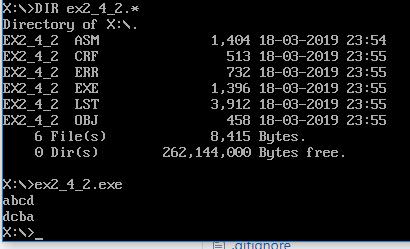

/*
Zhongyuan Zheng / zhongyuan_zheng@my.cuesta.edu
CIS 240
Exercise 2.4 Part 2
*/
DOSSEG ; Use Microsoft segment conventions
.MODEL SMALL ; conventions and small model
.STACK 200h ; Allocate 256-byte stack
.DATA
DataBuffer DB 100 DUP(?)
.CODE
READWRITE PROC
mov ax,@DATA ; Load segment location
mov ds,ax ; into DS register
mov si,OFFSET DataBuffer ;point to storage location
WAITFORLF:
mov ah,1 ;read command
int 21h ; read one char into AL
cmp al,0Dh ;test for line feed
je EXITWAITFORLF ;if line feed exit loop
mov [si],al ;save character
inc si ;point to next char
jmp WAITFORLF ;JMP TO WAITFORLF TOP
EXITWAITFORLF:
mov bx,OFFSET DataBuffer ;set base of data tables
sub si,bx ;find number of entries
dec si
WRITELOOPTOP:
mov ah,02 ;write command
mov dl,[bx+si] ;get byte for write command
int 21h ;write to monitor
dec si
jns WRITELOOPTOP ;JUMP TO WRITELOOPTOP
mov ah,4ch
int 21h
ret ;Return to DEBUG program
READWRITE ENDP
END
